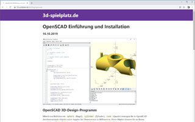

Articles / Blogs

Image ©
CC-BY-NC 3.0 -
Jeremie Francois
How to use OpenSCAD
by Jeremie Francois, Sep - Nov 2014

3d-spielplatz.de – A guide to 3D-Design and -Printing using OpenSCAD written in German
by Harald Mühlhoff
Started Oct 2019

An OpenSCAD Tutorial Series on the Makerbot blog
by MakerBlock
2011-2013

OpenScad beginners tutorial at EduTechWiki
by Daniel K. Schneider
Mar 2010 - May 2012

Make: Projects - Simple 3D models with OpenSCAD
by Sean Michael Ragan
Dec 2009

I Heart Robotics: OpenSCAD
(archived page, original page is gone)